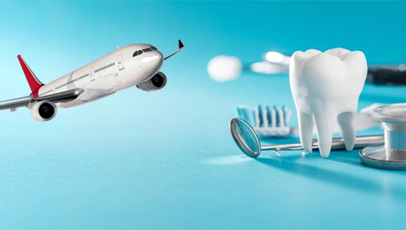
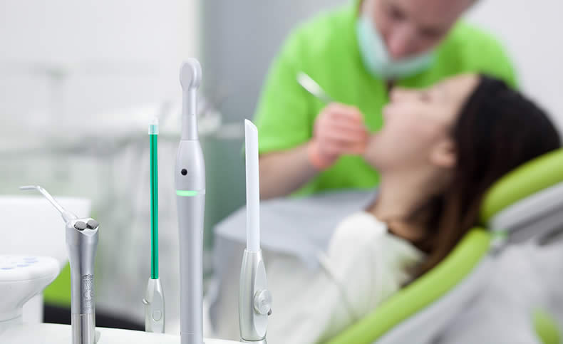

Sağlık Turizmi Diş
En genel tanımı ile dental turizm diş tedavisi hizmeti almak için farklı bir ülkeye seyahat etmektir. Kuşkusuz her ülke için diş turizmi ve genel olarak da sağlık turizmi çok büyük bir önem taşıyor. Turistler bir yandan diş tedavisi hizmeti alırken bir yandan da ülkeyi gezme, kültürü tanıma şansıma sahip olabiliyor.
Dolayısıyla hem tatil hem de sağlık hizmetlerinden faydalanma şansı bir arada değerlendiriliyor. Özellikle ülkemizde diş tedavilerinin ücretlerinin pek çok ülkeye nazaran daha makul rakamlardan oluşması, bu ülkenin yağın bir şekilde tercih edilmesinin nedenleri arasında yer alıyor.
Türkiye dental turizm alanında pek çok ülke ile kıyaslandığında son derece avantajlıdır. Öncelikle ülkemizde uygulanan diş tedavilerinin Avrupa ülkelerinde uygulanan tedaviler ile aynı kalitede olduğunun altını çizmek gerekiyor. Ancak buna karşın ülkemizde daha makul fiyatlandırmalar yapılıyor.
Diş turizminin son yıllarda belirgin bir artış grafiği seyrettiği biliniyor. Ülke ekonomisi açısından son derece önemli bir yere sahip olan bu turizmin geliştirilmesi için öncelikle sağlık kuruluşlarında başarılı bir ekibin oluşturulması gerekiyor.
Bu alana hizmet veren sağlık kuruluşlarının tanıtımının yapılması ve özellikle sosyal medyada bilinirliğin artırılması turizmin gelişmesine de ciddi bir katkıda bulunacaktır. Eğitimli personel ihtiyacının karşılanması da son derece önem taşıyan unsurlar arasında yer alıyor. Zira hastalar ile öncelikli olan iletişime geçen diş hekimleri değil personeldir. Dolayısıyla personelin de diş turizmi hakkında yeterli bilgi ve bilince sahip olması sağlanmalıdır.
 Dental Turizmde En Çok İstenen Hizmetler Nelerdir?
Pek çok farklı sağlık hizmeti dental turizm kapsamında yurt dışına gelenler için de sunuluyor. Ülkemizde en çok tercih edilen hizmetleri ise şu şekilde sıralayabiliriz:
- Estetik diş dolgu operasyonları
- Diş beyazlatma işlemleri
- İmplant
- Ortodonti
- Estetik lamina
- Dentap spa
- Dijital gülüş tasarımı
- Diş protezleri